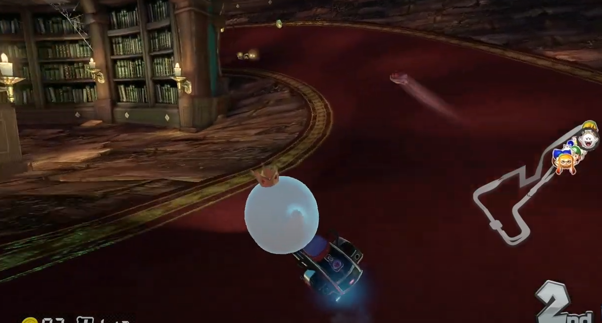

Linktree for blog
About this site

Mario kart 8 on the Wii U has to be an absloute joy to play, espesically when playing online with other people.
The Negatives

I exclusively play online with other players, I've got a few small gripes. At times due to pretendos low player count its quite hard to find a match. One thing im not a big fan of is how in the item-box the is a chance to gain a coin
The Postives
MK8 like almost every other mario kart game, is incrediblely fun.
The game has had a ton of creativity put into the art style and the gameplay is absloutely phenomenal.
Its an absloute joy to whizz around tracks and compete to the finish line. Graphically the game looks great,
although thats to be expected with the Wii U's upgraded hardware.
Mario kart 8 for the Wii U, an game review.
Mario kart 8 on the Wii U has to be an absloute joy to play, espesically when playing online with other people. You will need to homebrew your console so you can use the pretendo network, nintendo have closed down the nintendo servers for all wii u and 3ds games
I exclusively play online with other players, I've got a few small gripes. At times due to pretendos low player count its quite hard to find a match. One thing im not a big fan of is how in the item-box the is a chance to gain a coin pratically a useless item
i feel as though the should be more item balance, several times during a race i have non-stop constantly got coins out of item boxes. Some shortcuts are off-road, which means you go far far slower then on the normal track. One example of an off-road shortcut
is in the twisted mansion level, where you can take a turn into a library corner. At one point i did this without a boost, which ended up costing me that match. :(
MK8 like almost every other mario kart game, is incrediblely fun.
The game has had a ton of creativity put into the art style and the gameplay is absloutely phenomenal.
Its an absloute joy to whizz around tracks and compete to the finish line. Graphically the game looks great,
although thats to be expected with the Wii U's upgraded hardware.
Conclusion
Personally every MK game ive tried OG MK, MK64 and MK8
has been an absloute joy to play. I would highy reccomend getting MK8 if you already have a Wii U.
OG MK, MK64 and MK8has been an absloute joy to play. I would highy reccomend getting MK8 if you already have a Wii U.